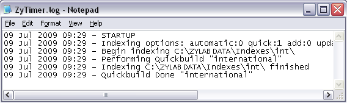

You can monitor the scheduled indexing using the log file.
ZyINDEX is open. If you are running the scheduled indexing as service, it is possible to check the log file without stopping it. When scheduled indexing is running in the foreground, stop the indexing process to enable the ZyINDEX interface.
The log file tells you if the indexing process ran, and when, how long and how many files were indexed before merging (to the existing index/word list).
